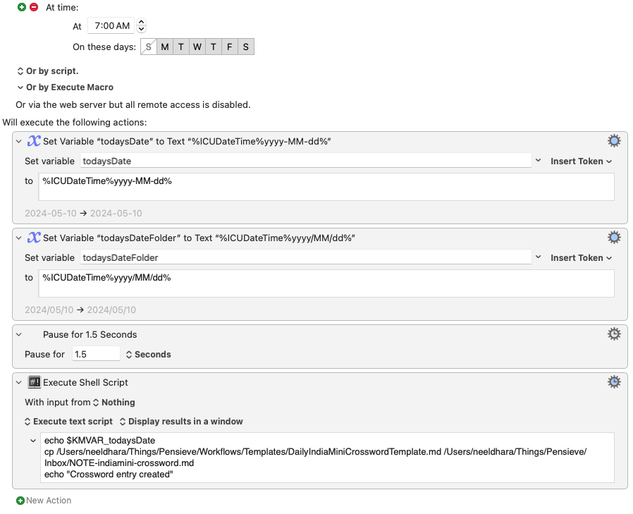

H/T Manu: I’ve discovered the India Mini Crossword series and it’s a great two-to-five minute thing to solve every morning! Here’s a little workflow I cobbled together to generate this collage of solved crosswords in Obsidian:

In practice, after the one-time setup I describe here, all I do after solving the crossword is print it and save the PDF to a folder called Notes/. The rest is automatic.
To begin with, I have Hazel monitor the Notes/ folder and run this rule:

All this does is checks if a PDF file has been added to the root level of the Notes/ folder which has the string Welcome to the India Mini crossword!. It then pulls out the date from the file and pushes it into a date-based subfolder; e.g, if the crossword was for the 10th of May, the PDF file moves to the folder Notes/2024/05/10/. This is nice because even if I miss a day and solve something later, simply saving the file will still auto-file it in the correct directory.
Next up, there is a second rule:

which processes the PDF file by extracting an image that contains the solved crossword. The actual work is carried out by this shell script, written mostly by chatGPT, complete with hard-coded paths:
#!/bin/bash
# Extract the first page
/usr/local/bin/pdftk /Users/neeldhara/Library/CloudStorage/Dropbox/Notes/$1/indiamini-crossword.pdf cat 1 output /Users/neeldhara/Library/CloudStorage/Dropbox/Notes/$1/first_page.pdf
echo /Users/neeldhara/Library/CloudStorage/Dropbox/Notes/$1/indiamini-crossword.pdf
# Convert the first page to a PNG
/opt/homebrew/bin/convert -density 300 -quality 100 /Users/neeldhara/Library/CloudStorage/Dropbox/Notes/$1/first_page.pdf /Users/neeldhara/Library/CloudStorage/Dropbox/Notes/$1/first_page.png
# Get the height and width of the image
height=$(/opt/homebrew/bin/identify -format "%h" /Users/neeldhara/Library/CloudStorage/Dropbox/Notes/$1/first_page.png)
width=$(/opt/homebrew/bin/identify -format "%w" /Users/neeldhara/Library/CloudStorage/Dropbox/Notes/$1/first_page.png)
# Calculate the half height and width
half_height=$((height/2))
half_width=$((width/2+5))
# Crop the image to the top right half
/opt/homebrew/bin/convert /Users/neeldhara/Library/CloudStorage/Dropbox/Notes/$1/first_page.png -crop 1100x1100+${half_width}+315 /Users/neeldhara/Library/CloudStorage/Dropbox/Notes/$1/indiamini-crossword.png
# Delete intermediate files
rm /Users/neeldhara/Library/CloudStorage/Dropbox/Notes/$1/first_page.png
rm /Users/neeldhara/Library/CloudStorage/Dropbox/Notes/$1/first_page.pdfI finally have a very simple Keyboard Maestro macro that runs every morning at 7AM — except Sundays, because the Sunday crossword is not a mini :) — to create the crossword note in my Obsidian vault in a date-based folder:

The crossword note template is very minimal:
---
title: India Mini Crossword · <% tp.date.now("YYYY") %>-<% tp.date.now("MM") %>-<% tp.date.now("DD") %>
tags:
- kw/c/crossword
- kw/i/indiamini
- puzzles/indiamini-crossword
asset: file:///Users/neeldhara/Library/CloudStorage/Dropbox/Notes/<% tp.date.now("YYYY") %>/<% tp.date.now("MM") %>/<% tp.date.now("DD") %>/indiamini-crossword.pdf
---
 %>/<% tp.date.now("MM") %>/<% tp.date.now("DD") %>/indiamini-crossword.png)The Templater plugin for Obsidian ensures that the dates expand correctly at the time the note is created. You could instead run a shell script to just generate these notes for all dates in advance, but I like this because the KM prompt reminds me to do the crossword :)
The individual crossword file simply shows the PNG file generated by the Hazel rule. I might eventually add solve times to the frontmatter. For the collage, I use this dataview query in a separate note:
console.log('Fetching pages from "Notes" with specific tag...');
const assets = dv.pages('"Notes"')
.where(p => p.tags?.includes("puzzles/indiamini-crossword") && p.asset)
.map(page => {
// Replace .pdf with .png in the asset path
const pngAsset = page.asset.replace('.pdf', '.png');
console.log(`Found page: ${page.file.path} with asset: ${pngAsset}`);
return {
file: page.file.link,
asset: pngAsset // Now the asset points to a .png file instead of a .pdf
};
});
dv.paragraph(`Total images found: ${assets.length}`);
assets.sort();
let fullstring = "";
if (assets.length === 0) {
dv.paragraph("No assets found. Check the folder, tags, and frontmatter.");
} else {
assets.forEach((item, index) => {
fullstring += ` `;
if ((index + 1) % 3 === 0) { // After every third image
fullstring += '\n'; // Append a line break
}
});
}
dv.paragraph(fullstring);The media grid snippet for Obsidian gets the grid alignment going for the images.
And that’s it!